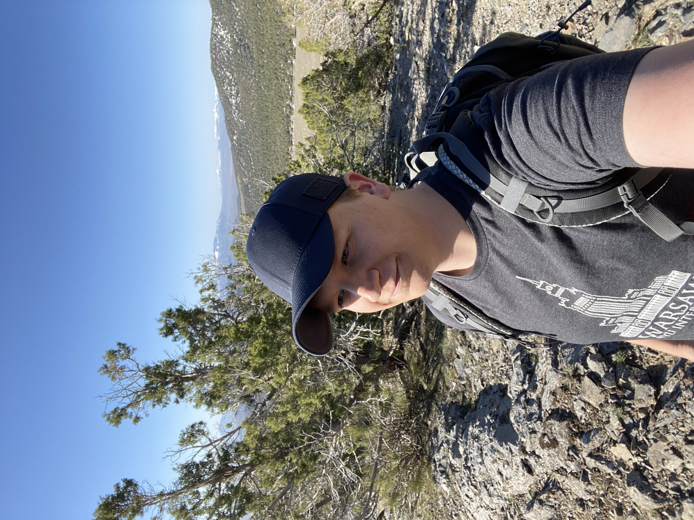

About Me

I’m from Virginia and came to Utah for school where I graduated from BYU with a degree in Linguistics.
I have been doing business since I was a little kid. The most fun part about business for me has always been sales & marketing.
I got a degree in Linguistics to help me improve my already stellar communication skills and to meet others who were on a similar path.
While getting my degree I continued to gain experience in sales and marketing as well as took classes in them and learned more about it on the side of school and work.
I’ve been doing sales & marketing for nearly 10 years now.
I enjoy this work and will give the best quality that I can give because, even though I know a lot about this field and am great at it, I am still look for ways to improve my skills so that I can add even more value to my clients and employers.
I know how important it is to generate revenue because without it you just have a hobby, not a business.
I realize that marketing can be difficult and frustrating, but ultimately, to me anyways, it’s fun and rewarding.
I would like to take that burden off of my clients’ and employers’ shoulders so that they can do what they love to do rather than all of their time being devoted to something they don’t want to do.
If you need a consultant or someone who will take on your company’s social media so that you don’t have to, then